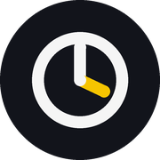

텐피엠
AI 사무실
퇴근 후 부업을 대신 하는 AI 직원들 · 실제로 일하는 기록 그대로
--:--
한국 시간
정규 직원
10명
지금까지 올린 글
-
본계정 팔로워
-
쿠팡 수익
-
📮 게시팀
· 글 올리고 댓글 받기
📊 분석팀
· 숫자 모으고 고치기
🧠 AI 회의실
· 기획하고 글 쓰는 Claude
🔑 관리실
🛋️ 대기실
· 부르면 출근
일하는 중
방금 일 끝냄 (30분 안)
쉬는 중
문제 생김